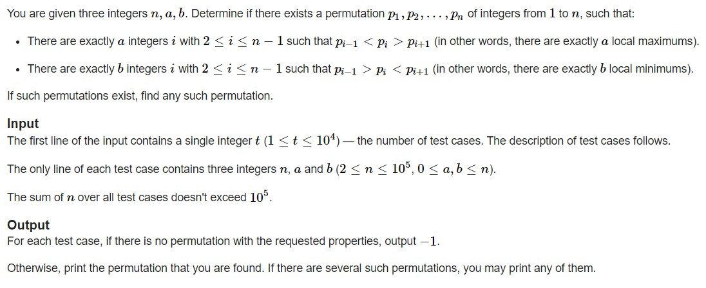
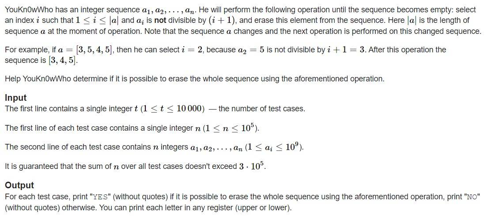
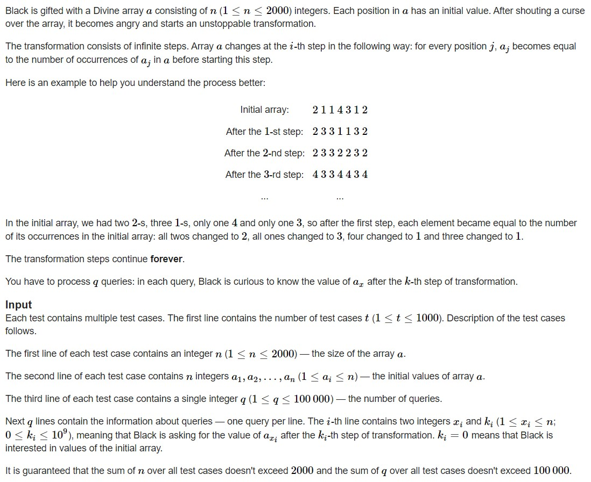
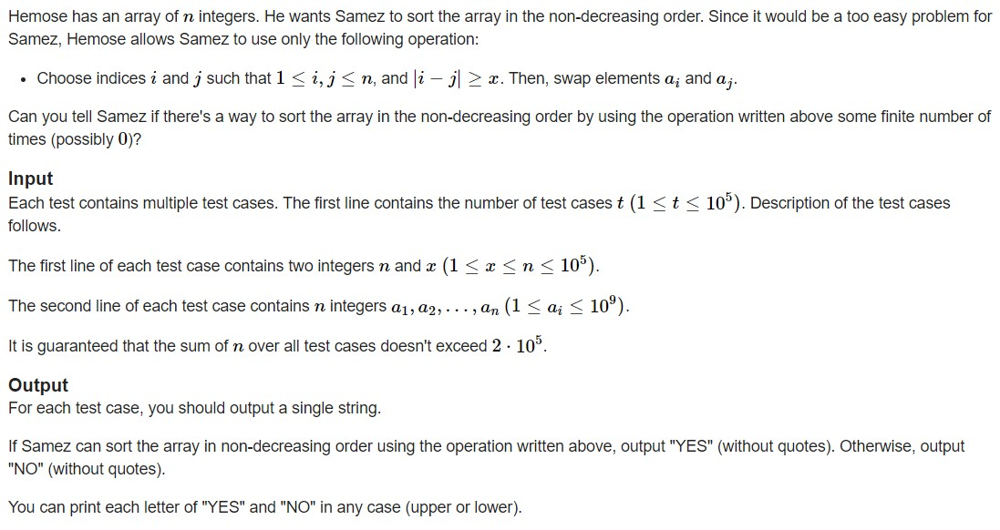

<!DOCTYPE html>


<html lang="zh-CN">
  

    <head>
      <meta charset="utf-8" />
        
      <meta
        name="viewport"
        content="width=device-width, initial-scale=1, maximum-scale=1"
      />
      <title>22.10.30刷题记录 |  jan&#39;s Blog</title>
  <meta name="generator" content="hexo-theme-ayer">
      
      <link rel="shortcut icon" href="/favicon.ico" />
       
<link rel="stylesheet" href="/dist/main.css">

      
<link rel="stylesheet" href="/css/fonts/remixicon.css">

      
<link rel="stylesheet" href="/css/custom.css">
 
      <script src="https://cdn.staticfile.org/pace/1.2.4/pace.min.js"></script>
       
 

      <link
        rel="stylesheet"
        href="https://cdn.jsdelivr.net/npm/@sweetalert2/theme-bulma@5.0.1/bulma.min.css"
      />
      <script src="https://cdn.jsdelivr.net/npm/sweetalert2@11.0.19/dist/sweetalert2.min.js"></script>

      <!-- mermaid -->
      
      <style>
        .swal2-styled.swal2-confirm {
          font-size: 1.6rem;
        }
      </style>
    <link rel="alternate" href="/atom.xml" title="jan's Blog" type="application/atom+xml">
</head>
  </html>
</html>


<body>
  <div id="app">
    
      
    <main class="content on">
      <section class="outer">
  <article
  id="post-22-10-30刷题记录"
  class="article article-type-post"
  itemscope
  itemprop="blogPost"
  data-scroll-reveal
>
  <div class="article-inner">
    
    <header class="article-header">
       
<h1 class="article-title sea-center" style="border-left:0" itemprop="name">
  22.10.30刷题记录
</h1>
 

      
    </header>
     
    <div class="article-meta">
      <a href="/2022/10/30/22-10-30%E5%88%B7%E9%A2%98%E8%AE%B0%E5%BD%95/" class="article-date">
  <time datetime="2022-10-30T05:49:43.000Z" itemprop="datePublished">2022-10-30</time>
</a>   
<div class="word_count">
    <span class="post-time">
        <span class="post-meta-item-icon">
            <i class="ri-quill-pen-line"></i>
            <span class="post-meta-item-text"> 字数统计:</span>
            <span class="post-count">1.8k</span>
        </span>
    </span>

    <span class="post-time">
        &nbsp; | &nbsp;
        <span class="post-meta-item-icon">
            <i class="ri-book-open-line"></i>
            <span class="post-meta-item-text"> 阅读时长≈</span>
            <span class="post-count">9 分钟</span>
        </span>
    </span>
</div>
 
    </div>
      
    <div class="tocbot"></div>


  
    <div class="article-entry" itemprop="articleBody">
       
  <h1 id="Build-the-Permutation"><a href="#Build-the-Permutation" class="headerlink" title="Build the Permutation"></a><a target="_blank" rel="noopener" href="https://codeforces.com/problemset/problem/1608/B">Build the Permutation</a></h1><p><br>Local Maximums/Local Minimums问题，<br>由题目我们可以很容易知道，$a+b\leq n-2$，因为当整个序列都是Local Max或Local Min时最左与最右都不能成为Local Max或Local Min.<br>并且$|a-b|\leq 1$因为每两个LMax之间一定有一个LMin，两个Lmin间必有一个LMax.<br>我们可以首先把最大的$a+b+2$个元素拿出来构造LMin与Lmax,至于为什么要$+2$，因为最左边与最右边是不能作为LMin与LMax的，然后剩下的$n-(a+b+2)$则按顺序输出。当$a\geq b$时可以先输出那$n-(a+b+2)$然后再输出那$(a+b+2)$个数，此时可以保证LMax个数多于LMin，<br>vice versa.<br>代码：<br><figure class="highlight cpp"><table><tr><td class="gutter"><pre><span class="line">1</span><br><span class="line">2</span><br><span class="line">3</span><br><span class="line">4</span><br><span class="line">5</span><br><span class="line">6</span><br><span class="line">7</span><br><span class="line">8</span><br><span class="line">9</span><br><span class="line">10</span><br><span class="line">11</span><br><span class="line">12</span><br><span class="line">13</span><br><span class="line">14</span><br><span class="line">15</span><br><span class="line">16</span><br><span class="line">17</span><br><span class="line">18</span><br><span class="line">19</span><br><span class="line">20</span><br><span class="line">21</span><br><span class="line">22</span><br><span class="line">23</span><br><span class="line">24</span><br><span class="line">25</span><br><span class="line">26</span><br><span class="line">27</span><br><span class="line">28</span><br><span class="line">29</span><br><span class="line">30</span><br><span class="line">31</span><br><span class="line">32</span><br><span class="line">33</span><br><span class="line">34</span><br><span class="line">35</span><br><span class="line">36</span><br><span class="line">37</span><br><span class="line">38</span><br><span class="line">39</span><br><span class="line">40</span><br><span class="line">41</span><br><span class="line">42</span><br><span class="line">43</span><br><span class="line">44</span><br><span class="line">45</span><br><span class="line">46</span><br><span class="line">47</span><br><span class="line">48</span><br></pre></td><td class="code"><pre><span class="line"><span class="meta">#<span class="keyword">include</span> <span class="string">&lt;bits/stdc++.h&gt;</span></span></span><br><span class="line"><span class="meta">#<span class="keyword">define</span> IOS ios_base::sync_with_stdio(0); cin.tie(0);</span></span><br><span class="line"><span class="meta">#<span class="keyword">define</span> INF 0x3f3f3f3f</span></span><br><span class="line"><span class="meta">#<span class="keyword">define</span> mod 1000000007</span></span><br><span class="line"><span class="meta">#<span class="keyword">define</span> PII pair<span class="string">&lt;int,int&gt;</span></span></span><br><span class="line"><span class="meta">#<span class="keyword">define</span> PLL pair<span class="string">&lt;ll,ll&gt;</span></span></span><br><span class="line"><span class="keyword">typedef</span> <span class="type">long</span> <span class="type">long</span> ll;</span><br><span class="line"><span class="keyword">using</span> <span class="keyword">namespace</span> std;</span><br><span class="line"><span class="type">int</span> t;string s;<span class="type">int</span> m;<span class="type">int</span> n;ll k;ll x;</span><br><span class="line"><span class="function"><span class="type">void</span> <span class="title">solve</span><span class="params">()</span></span>&#123;</span><br><span class="line">    <span class="type">int</span> a,b;</span><br><span class="line">    cin&gt;&gt;n&gt;&gt;a&gt;&gt;b;</span><br><span class="line">    <span class="keyword">if</span>(<span class="built_in">abs</span>(a-b)&gt;<span class="number">1</span>||a+b&gt;n<span class="number">-2</span>)&#123;cout&lt;&lt;<span class="string">&quot;-1\n&quot;</span>;&#125;</span><br><span class="line">    <span class="keyword">else</span>&#123;</span><br><span class="line">        vector&lt;PII&gt; v;</span><br><span class="line">        <span class="keyword">if</span>(a&gt;=b)&#123;</span><br><span class="line">            <span class="type">int</span> res=n-(a+b+<span class="number">2</span>);</span><br><span class="line">            <span class="keyword">for</span>(<span class="type">int</span> i=<span class="number">1</span>;i&lt;=res;i++)&#123;</span><br><span class="line">                cout&lt;&lt;i&lt;&lt;<span class="string">&quot; &quot;</span>;</span><br><span class="line">            &#125;<span class="type">int</span> l=res+<span class="number">1</span>,r=n;</span><br><span class="line">            <span class="keyword">for</span>(<span class="type">int</span> i=<span class="number">0</span>;i&lt;n-res;i++)&#123;</span><br><span class="line">                <span class="keyword">if</span>(i%<span class="number">2</span>==<span class="number">1</span>)&#123;</span><br><span class="line">                    cout&lt;&lt;(r--)&lt;&lt;<span class="string">&quot; &quot;</span>;</span><br><span class="line">                &#125;<span class="keyword">else</span>&#123;</span><br><span class="line">                    cout&lt;&lt;(l++)&lt;&lt;<span class="string">&quot; &quot;</span>;</span><br><span class="line">                &#125;</span><br><span class="line">            &#125;cout&lt;&lt;<span class="string">&quot;\n&quot;</span>;</span><br><span class="line">        &#125;<span class="keyword">else</span>&#123;</span><br><span class="line">            <span class="type">int</span> res=n-(a+b+<span class="number">2</span>);</span><br><span class="line">            <span class="keyword">for</span>(<span class="type">int</span> i=n;i&gt;n-res;i--)&#123;</span><br><span class="line">                cout&lt;&lt;i&lt;&lt;<span class="string">&quot; &quot;</span>;</span><br><span class="line">            &#125;<span class="type">int</span> l=n-res,r=<span class="number">1</span>;</span><br><span class="line">            <span class="keyword">for</span>(<span class="type">int</span> i=<span class="number">0</span>;i&lt;n-res;i++)&#123;</span><br><span class="line">                <span class="keyword">if</span>(i%<span class="number">2</span>==<span class="number">0</span>)&#123;</span><br><span class="line">                    cout&lt;&lt;(l--)&lt;&lt;<span class="string">&quot; &quot;</span>;</span><br><span class="line">                &#125;<span class="keyword">else</span>&#123;</span><br><span class="line">                    cout&lt;&lt;(r++)&lt;&lt;<span class="string">&quot; &quot;</span>;</span><br><span class="line">                &#125;</span><br><span class="line">            &#125;cout&lt;&lt;<span class="string">&quot;\n&quot;</span>;</span><br><span class="line">        &#125;</span><br><span class="line">    &#125;</span><br><span class="line">&#125;</span><br><span class="line"><span class="function"><span class="type">int</span> <span class="title">main</span><span class="params">()</span> </span>&#123;</span><br><span class="line">    IOS</span><br><span class="line">    cin &gt;&gt; t;</span><br><span class="line">    <span class="keyword">while</span> (t--)</span><br><span class="line">        <span class="built_in">solve</span>();</span><br><span class="line">&#125;</span><br></pre></td></tr></table></figure><br>当然也可以直接只算$a\geq b$的情况，然后$a&lt; b$的情况直接由$a\geq b$得到的序列$q$中每一个元素替换为$q_i=n-q_i+1$.<br><figure class="highlight cpp"><table><tr><td class="gutter"><pre><span class="line">1</span><br><span class="line">2</span><br><span class="line">3</span><br><span class="line">4</span><br><span class="line">5</span><br><span class="line">6</span><br><span class="line">7</span><br><span class="line">8</span><br><span class="line">9</span><br><span class="line">10</span><br><span class="line">11</span><br><span class="line">12</span><br><span class="line">13</span><br><span class="line">14</span><br><span class="line">15</span><br><span class="line">16</span><br><span class="line">17</span><br><span class="line">18</span><br><span class="line">19</span><br><span class="line">20</span><br><span class="line">21</span><br><span class="line">22</span><br><span class="line">23</span><br><span class="line">24</span><br><span class="line">25</span><br><span class="line">26</span><br><span class="line">27</span><br><span class="line">28</span><br><span class="line">29</span><br><span class="line">30</span><br><span class="line">31</span><br><span class="line">32</span><br><span class="line">33</span><br><span class="line">34</span><br><span class="line">35</span><br><span class="line">36</span><br><span class="line">37</span><br><span class="line">38</span><br><span class="line">39</span><br><span class="line">40</span><br><span class="line">41</span><br><span class="line">42</span><br><span class="line">43</span><br></pre></td><td class="code"><pre><span class="line"><span class="meta">#<span class="keyword">include</span> <span class="string">&lt;bits/stdc++.h&gt;</span></span></span><br><span class="line"><span class="meta">#<span class="keyword">define</span> IOS ios_base::sync_with_stdio(0); cin.tie(0);</span></span><br><span class="line"><span class="meta">#<span class="keyword">define</span> INF 0x3f3f3f3f</span></span><br><span class="line"><span class="meta">#<span class="keyword">define</span> mod 1000000007</span></span><br><span class="line"><span class="meta">#<span class="keyword">define</span> PII pair<span class="string">&lt;int,int&gt;</span></span></span><br><span class="line"><span class="meta">#<span class="keyword">define</span> PLL pair<span class="string">&lt;ll,ll&gt;</span></span></span><br><span class="line"><span class="keyword">typedef</span> <span class="type">long</span> <span class="type">long</span> ll;</span><br><span class="line"><span class="keyword">using</span> <span class="keyword">namespace</span> std;</span><br><span class="line"><span class="type">int</span> t;string s;<span class="type">int</span> m;<span class="type">int</span> n;</span><br><span class="line"><span class="function"><span class="type">void</span> <span class="title">solve</span><span class="params">()</span></span>&#123;</span><br><span class="line">    <span class="type">int</span> a,b;</span><br><span class="line">    cin&gt;&gt;n&gt;&gt;a&gt;&gt;b;</span><br><span class="line">    <span class="keyword">if</span>(<span class="built_in">abs</span>(a-b)&gt;<span class="number">1</span>||a+b&gt;n<span class="number">-2</span>)&#123;</span><br><span class="line">        cout&lt;&lt;<span class="string">&quot;-1\n&quot;</span>;&#125;</span><br><span class="line">    <span class="keyword">else</span>&#123;</span><br><span class="line">        vector&lt;<span class="type">int</span>&gt; v;</span><br><span class="line">        <span class="type">int</span> res=n-(a+b+<span class="number">2</span>);</span><br><span class="line">        <span class="keyword">for</span>(<span class="type">int</span> i=<span class="number">1</span>;i&lt;=res;i++)&#123;v.<span class="built_in">push_back</span>(i);&#125;</span><br><span class="line">        <span class="type">int</span> l=res+<span class="number">1</span>,r=n;</span><br><span class="line">        <span class="keyword">for</span>(<span class="type">int</span> i=<span class="number">0</span>;i&lt;n-res;i++)&#123;</span><br><span class="line">            <span class="keyword">if</span>(i%<span class="number">2</span>==<span class="number">1</span>)&#123;</span><br><span class="line">                v.<span class="built_in">push_back</span>(r);r--;</span><br><span class="line">            &#125;<span class="keyword">else</span>&#123;</span><br><span class="line">                v.<span class="built_in">push_back</span>(l);l++;</span><br><span class="line">            &#125;</span><br><span class="line">        &#125;</span><br><span class="line">        <span class="keyword">if</span>(a&gt;=b)&#123;</span><br><span class="line">            <span class="keyword">for</span> (<span class="type">int</span> i:v) &#123;cout&lt;&lt;i&lt;&lt;<span class="string">&quot; &quot;</span>;&#125;</span><br><span class="line">            cout&lt;&lt;<span class="string">&quot;\n&quot;</span>;</span><br><span class="line">        &#125;<span class="keyword">else</span>&#123;</span><br><span class="line">            <span class="keyword">for</span>(<span class="type">int</span> &amp;i:v)&#123;</span><br><span class="line">                i=n-i+<span class="number">1</span>;</span><br><span class="line">                cout&lt;&lt;i&lt;&lt;<span class="string">&quot; &quot;</span>;</span><br><span class="line">            &#125;cout&lt;&lt;<span class="string">&quot;\n&quot;</span>;</span><br><span class="line">        &#125;</span><br><span class="line">    &#125;</span><br><span class="line">&#125;</span><br><span class="line"><span class="function"><span class="type">int</span> <span class="title">main</span><span class="params">()</span> </span>&#123;</span><br><span class="line">    IOS</span><br><span class="line">    cin &gt;&gt; t;</span><br><span class="line">    <span class="keyword">while</span> (t--)</span><br><span class="line">        <span class="built_in">solve</span>();</span><br><span class="line">&#125;</span><br></pre></td></tr></table></figure></p>
<h1 id="Di-visible-Confusion"><a href="#Di-visible-Confusion" class="headerlink" title="Di-visible Confusion"></a><a target="_blank" rel="noopener" href="https://codeforces.com/problemset/problem/1603/A">Di-visible Confusion</a></h1><p><br>这个题目要注意一下是<strong>not divisable</strong>，我看半天才发现题目看错了(•ิ_•ิ)。<br>我们可以先记录一下初始数组有哪些是可以消去的，然后打个标记。遍历完后，再从头开始遍历直到到达不能消去的点，然后往前找是否有可以消去当前数字的位置，如果没有直接输出no，当且仅当整个数组都已经打上标记后才能输出yes<br>代码：<br><figure class="highlight cpp"><table><tr><td class="gutter"><pre><span class="line">1</span><br><span class="line">2</span><br><span class="line">3</span><br><span class="line">4</span><br><span class="line">5</span><br><span class="line">6</span><br><span class="line">7</span><br><span class="line">8</span><br><span class="line">9</span><br><span class="line">10</span><br><span class="line">11</span><br><span class="line">12</span><br><span class="line">13</span><br><span class="line">14</span><br><span class="line">15</span><br><span class="line">16</span><br><span class="line">17</span><br><span class="line">18</span><br><span class="line">19</span><br><span class="line">20</span><br><span class="line">21</span><br><span class="line">22</span><br><span class="line">23</span><br><span class="line">24</span><br><span class="line">25</span><br><span class="line">26</span><br><span class="line">27</span><br><span class="line">28</span><br><span class="line">29</span><br><span class="line">30</span><br><span class="line">31</span><br><span class="line">32</span><br><span class="line">33</span><br><span class="line">34</span><br><span class="line">35</span><br></pre></td><td class="code"><pre><span class="line"><span class="meta">#<span class="keyword">include</span> <span class="string">&lt;bits/stdc++&gt;</span></span></span><br><span class="line"><span class="meta">#<span class="keyword">define</span> IOS ios_base::sync_with_stdio(0); cin.tie(0);</span></span><br><span class="line"><span class="meta">#<span class="keyword">define</span> INF 0x3f3f3f3f</span></span><br><span class="line"><span class="meta">#<span class="keyword">define</span> mod 1000000007</span></span><br><span class="line"><span class="meta">#<span class="keyword">define</span> PII pair<span class="string">&lt;int,int&gt;</span></span></span><br><span class="line"><span class="meta">#<span class="keyword">define</span> PLL pair<span class="string">&lt;ll,ll&gt;</span></span></span><br><span class="line"><span class="keyword">typedef</span> <span class="type">long</span> <span class="type">long</span> ll;</span><br><span class="line"><span class="keyword">using</span> <span class="keyword">namespace</span> std;</span><br><span class="line"><span class="type">int</span> t;string s;<span class="type">int</span> m;<span class="type">int</span> n;ll k;ll x;</span><br><span class="line"><span class="function"><span class="type">void</span> <span class="title">solve</span><span class="params">()</span></span>&#123;</span><br><span class="line">    cin&gt;&gt;n;</span><br><span class="line">    <span class="function">vector&lt;<span class="type">int</span>&gt; <span class="title">v</span><span class="params">(n+<span class="number">3</span>)</span></span>;</span><br><span class="line">    <span class="function">vector&lt;<span class="type">bool</span>&gt; <span class="title">vis</span><span class="params">(n+<span class="number">3</span>,<span class="number">0</span>)</span></span>;</span><br><span class="line">    <span class="keyword">for</span>(<span class="type">int</span> i=<span class="number">1</span>;i&lt;=n;i++)cin&gt;&gt;v[i];</span><br><span class="line">    <span class="keyword">for</span>(<span class="type">int</span> i=n;i&gt;=<span class="number">1</span>;i--)&#123;<span class="keyword">if</span>(v[i]%(<span class="number">1</span>+i)!=<span class="number">0</span>)&#123;vis[i]=<span class="number">1</span>;&#125;&#125;</span><br><span class="line">    <span class="keyword">if</span>(!vis[<span class="number">1</span>])&#123;cout&lt;&lt;<span class="string">&quot;NO\n&quot;</span>;<span class="keyword">return</span>;&#125;</span><br><span class="line">    <span class="keyword">for</span>(<span class="type">int</span> i=<span class="number">1</span>;i&lt;=n;i++)&#123;</span><br><span class="line">        <span class="keyword">if</span>(vis[i])<span class="keyword">continue</span>;</span><br><span class="line">        <span class="keyword">else</span>&#123;</span><br><span class="line">            <span class="keyword">for</span>(<span class="type">int</span> j=<span class="number">1</span>;j&lt;i;j++)&#123;</span><br><span class="line">                <span class="keyword">if</span>(v[i]%(j+<span class="number">1</span>)!=<span class="number">0</span>)&#123;</span><br><span class="line">                    vis[i]=<span class="number">1</span>;<span class="keyword">break</span>;</span><br><span class="line">                &#125;</span><br><span class="line">            &#125;</span><br><span class="line">            <span class="keyword">if</span>(!vis[i])&#123;cout&lt;&lt;<span class="string">&quot;NO\n&quot;</span>;<span class="keyword">return</span>;&#125;</span><br><span class="line">        &#125;</span><br><span class="line">    &#125;</span><br><span class="line">    cout&lt;&lt;<span class="string">&quot;YES\n&quot;</span>;</span><br><span class="line">&#125;</span><br><span class="line"><span class="function"><span class="type">int</span> <span class="title">main</span><span class="params">()</span> </span>&#123;</span><br><span class="line">    IOS</span><br><span class="line">    cin &gt;&gt; t;</span><br><span class="line">    <span class="keyword">while</span> (t--)</span><br><span class="line">        <span class="built_in">solve</span>();</span><br><span class="line">&#125;</span><br></pre></td></tr></table></figure></p>
<h1 id="Divine-Array"><a href="#Divine-Array" class="headerlink" title="Divine Array"></a><a target="_blank" rel="noopener" href="https://codeforces.com/contest/1602/problem/B">Divine Array</a></h1><p><br>这个观察样例就大概能推出这些数组在进行一定次数操作后一定会保持同一种状态。<br>因此只要模拟操作知道当前数组与前一种操作时的数组一样就结束模拟。<br>能用vector就不要用map了太容易超时了(•ิ_•ิ)。<br><figure class="highlight cpp"><table><tr><td class="gutter"><pre><span class="line">1</span><br><span class="line">2</span><br><span class="line">3</span><br><span class="line">4</span><br><span class="line">5</span><br><span class="line">6</span><br><span class="line">7</span><br><span class="line">8</span><br><span class="line">9</span><br><span class="line">10</span><br><span class="line">11</span><br><span class="line">12</span><br><span class="line">13</span><br><span class="line">14</span><br><span class="line">15</span><br><span class="line">16</span><br><span class="line">17</span><br><span class="line">18</span><br><span class="line">19</span><br><span class="line">20</span><br><span class="line">21</span><br><span class="line">22</span><br><span class="line">23</span><br><span class="line">24</span><br><span class="line">25</span><br><span class="line">26</span><br><span class="line">27</span><br><span class="line">28</span><br><span class="line">29</span><br><span class="line">30</span><br><span class="line">31</span><br><span class="line">32</span><br><span class="line">33</span><br><span class="line">34</span><br><span class="line">35</span><br><span class="line">36</span><br><span class="line">37</span><br><span class="line">38</span><br><span class="line">39</span><br><span class="line">40</span><br><span class="line">41</span><br><span class="line">42</span><br><span class="line">43</span><br><span class="line">44</span><br><span class="line">45</span><br><span class="line">46</span><br><span class="line">47</span><br><span class="line">48</span><br><span class="line">49</span><br></pre></td><td class="code"><pre><span class="line"><span class="meta">#<span class="keyword">include</span> <span class="string">&lt;bits/stdc++.h&gt;</span></span></span><br><span class="line"><span class="meta">#<span class="keyword">define</span> IOS ios_base::sync_with_stdio(0); cin.tie(0);</span></span><br><span class="line"><span class="meta">#<span class="keyword">define</span> INF 0x3f3f3f3f</span></span><br><span class="line"><span class="meta">#<span class="keyword">define</span> mod 1000000007</span></span><br><span class="line"><span class="meta">#<span class="keyword">define</span> PII pair<span class="string">&lt;int,int&gt;</span></span></span><br><span class="line"><span class="meta">#<span class="keyword">define</span> PLL pair<span class="string">&lt;ll,ll&gt;</span></span></span><br><span class="line"><span class="keyword">typedef</span> <span class="type">long</span> <span class="type">long</span> ll;</span><br><span class="line"><span class="keyword">using</span> <span class="keyword">namespace</span> std;</span><br><span class="line"><span class="type">int</span> t;string s;<span class="type">int</span> m;<span class="type">int</span> n;ll k;ll x;</span><br><span class="line"><span class="function"><span class="type">void</span> <span class="title">solve</span><span class="params">()</span></span>&#123;</span><br><span class="line">    vector&lt;vector&lt;<span class="type">int</span>&gt;&gt; a;</span><br><span class="line">    cin&gt;&gt;n;</span><br><span class="line">    <span class="function">vector&lt;<span class="type">int</span>&gt; <span class="title">mp</span><span class="params">(n+<span class="number">1</span>,<span class="number">0</span>)</span></span>;</span><br><span class="line">    <span class="function">vector&lt;<span class="type">int</span>&gt; <span class="title">mp2</span><span class="params">(n+<span class="number">1</span>,<span class="number">0</span>)</span></span>;</span><br><span class="line">    <span class="function">vector&lt;<span class="type">int</span>&gt; <span class="title">v</span><span class="params">(n)</span></span>;</span><br><span class="line">    <span class="keyword">for</span> (<span class="type">int</span> i = <span class="number">0</span>; i &lt; n; ++i) &#123;</span><br><span class="line">        cin&gt;&gt;v[i];</span><br><span class="line">        mp[v[i]]++;</span><br><span class="line">    &#125;a.<span class="built_in">push_back</span>(v);</span><br><span class="line">    <span class="function">vector&lt;<span class="type">int</span>&gt; <span class="title">tmp</span><span class="params">(n)</span></span>;</span><br><span class="line">    tmp=v;</span><br><span class="line">    <span class="keyword">for</span>(<span class="type">int</span> i=<span class="number">0</span>;i&lt;n;i++)&#123;</span><br><span class="line">        tmp[i]=mp[v[i]];mp2[tmp[i]]++;</span><br><span class="line">    &#125;</span><br><span class="line">    a.<span class="built_in">push_back</span>(tmp);</span><br><span class="line">    <span class="type">int</span> cnt=<span class="number">1</span>;mp.<span class="built_in">clear</span>();mp=mp2;</span><br><span class="line">    <span class="keyword">while</span>(a[cnt]!=a[cnt<span class="number">-1</span>])&#123;</span><br><span class="line">        <span class="function">vector&lt;<span class="type">int</span>&gt; <span class="title">ttmp</span><span class="params">(n)</span></span>;</span><br><span class="line">        a.<span class="built_in">push_back</span>(ttmp);</span><br><span class="line">        cnt++;a[cnt]=a[cnt<span class="number">-1</span>];</span><br><span class="line">        <span class="function">vector&lt;<span class="type">int</span>&gt; <span class="title">t3</span><span class="params">(n+<span class="number">1</span>,<span class="number">0</span>)</span></span>;</span><br><span class="line">        <span class="keyword">for</span>(<span class="type">int</span> i=<span class="number">0</span>;i&lt;n;i++)&#123;</span><br><span class="line">            a[cnt][i]=mp[a[cnt][i]];</span><br><span class="line">            t3[a[cnt][i]]++;</span><br><span class="line">        &#125;</span><br><span class="line">        mp=t3;</span><br><span class="line">    &#125;<span class="type">int</span> q;cin&gt;&gt;q;</span><br><span class="line">    <span class="keyword">while</span>(q--)&#123;</span><br><span class="line">        <span class="type">int</span> xx;cin&gt;&gt;xx&gt;&gt;k;</span><br><span class="line">        <span class="keyword">if</span>(k&gt;a.<span class="built_in">size</span>()<span class="number">-1</span>)&#123;cout&lt;&lt;a[a.<span class="built_in">size</span>()<span class="number">-1</span>][xx<span class="number">-1</span>]&lt;&lt;<span class="string">&quot;\n&quot;</span>;&#125;</span><br><span class="line">        <span class="keyword">else</span>&#123;cout&lt;&lt;a[k][xx<span class="number">-1</span>]&lt;&lt;<span class="string">&quot;\n&quot;</span>;&#125;</span><br><span class="line">    &#125;</span><br><span class="line">&#125;</span><br><span class="line"><span class="function"><span class="type">int</span> <span class="title">main</span><span class="params">()</span> </span>&#123;</span><br><span class="line">    IOS</span><br><span class="line">    cin &gt;&gt; t;</span><br><span class="line">    <span class="keyword">while</span> (t--)</span><br><span class="line">        <span class="built_in">solve</span>();</span><br><span class="line">&#125;</span><br></pre></td></tr></table></figure></p>
<h1 id="Hemose-Shopping"><a href="#Hemose-Shopping" class="headerlink" title="Hemose Shopping"></a><a target="_blank" rel="noopener" href="https://codeforces.com/problemset/problem/1592/B">Hemose Shopping</a></h1><p><br>这个题目可以把$x$具体为一个可以移动的区间，类似于拿一块长条遮住数组中任意连续的长度为$x-1$(因为是$|i-j|\geq x -&gt;等于也能满足$)的区间，然后区间的两边可以交换，即左能去右，右能去左，但是被遮住的部分不能移动，因此可以推出，当$x&lt;=n/2$时一定是每个位置都相互连通。然后考虑当$x&gt;n/2$时的极限情况，长条在数组最左边和最右边覆盖的交集就是无论长条如何移动都不能进行交换的位置，因此只需考虑这个区间是否有序即可。<br><figure class="highlight cpp"><table><tr><td class="gutter"><pre><span class="line">1</span><br><span class="line">2</span><br><span class="line">3</span><br><span class="line">4</span><br><span class="line">5</span><br><span class="line">6</span><br><span class="line">7</span><br><span class="line">8</span><br><span class="line">9</span><br><span class="line">10</span><br><span class="line">11</span><br><span class="line">12</span><br><span class="line">13</span><br><span class="line">14</span><br><span class="line">15</span><br><span class="line">16</span><br><span class="line">17</span><br><span class="line">18</span><br><span class="line">19</span><br><span class="line">20</span><br><span class="line">21</span><br><span class="line">22</span><br><span class="line">23</span><br><span class="line">24</span><br><span class="line">25</span><br><span class="line">26</span><br><span class="line">27</span><br><span class="line">28</span><br><span class="line">29</span><br><span class="line">30</span><br><span class="line">31</span><br><span class="line">32</span><br><span class="line">33</span><br><span class="line">34</span><br></pre></td><td class="code"><pre><span class="line"><span class="meta">#<span class="keyword">include</span> <span class="string">&lt;bit/stdc++.h&gt;</span></span></span><br><span class="line"><span class="meta">#<span class="keyword">define</span> IOS ios_base::sync_with_stdio(0); cin.tie(0);</span></span><br><span class="line"><span class="meta">#<span class="keyword">define</span> INF 0x3f3f3f3f</span></span><br><span class="line"><span class="meta">#<span class="keyword">define</span> mod 1000000007</span></span><br><span class="line"><span class="meta">#<span class="keyword">define</span> PII pair<span class="string">&lt;int,int&gt;</span></span></span><br><span class="line"><span class="meta">#<span class="keyword">define</span> PLL pair<span class="string">&lt;ll,ll&gt;</span></span></span><br><span class="line"><span class="meta">#<span class="keyword">define</span> All(a) a.begin(),a.end()</span></span><br><span class="line"><span class="keyword">typedef</span> <span class="type">long</span> <span class="type">long</span> ll;</span><br><span class="line"><span class="keyword">using</span> <span class="keyword">namespace</span> std;</span><br><span class="line"><span class="type">int</span> t;string s;<span class="type">int</span> m;<span class="type">int</span> n;ll k;ll x;</span><br><span class="line"><span class="function"><span class="type">void</span> <span class="title">solve</span><span class="params">()</span></span>&#123;</span><br><span class="line">    cin&gt;&gt;n&gt;&gt;x;</span><br><span class="line">    vector&lt;<span class="type">int</span>&gt; v;</span><br><span class="line">    <span class="keyword">for</span>(<span class="type">int</span> i=<span class="number">0</span>;i&lt;n;i++)&#123;</span><br><span class="line">        <span class="type">int</span> xx;cin&gt;&gt;xx,v.<span class="built_in">push_back</span>(xx);</span><br><span class="line">    &#125;</span><br><span class="line">    vector&lt;<span class="type">int</span>&gt; v2;v2=v;</span><br><span class="line">    <span class="keyword">if</span>(x&gt;n<span class="number">-1</span>&amp;&amp;!<span class="built_in">is_sorted</span>(<span class="built_in">All</span>(v)))&#123;cout&lt;&lt;<span class="string">&quot;NO\n&quot;</span>;<span class="keyword">return</span>;&#125;</span><br><span class="line">    <span class="keyword">if</span>(x&lt;=n/<span class="number">2</span>||x&lt;=<span class="number">1</span>)&#123;cout&lt;&lt;<span class="string">&quot;YES\n&quot;</span>;<span class="keyword">return</span>;&#125;</span><br><span class="line">    <span class="built_in">sort</span>(<span class="built_in">All</span>(v));</span><br><span class="line">    <span class="keyword">for</span>(<span class="type">int</span> i=n-x;i&lt;=x<span class="number">-1</span>;i++)&#123;</span><br><span class="line">        <span class="keyword">if</span>(v2[i]!=v[i])&#123;</span><br><span class="line">            cout&lt;&lt;<span class="string">&quot;NO\n&quot;</span>;</span><br><span class="line">            <span class="keyword">return</span>;</span><br><span class="line">        &#125;</span><br><span class="line">    &#125;</span><br><span class="line">    cout&lt;&lt;<span class="string">&quot;YES\n&quot;</span>;</span><br><span class="line">&#125;</span><br><span class="line"><span class="function"><span class="type">int</span> <span class="title">main</span><span class="params">()</span> </span>&#123;</span><br><span class="line">    IOS</span><br><span class="line">    cin &gt;&gt; t;</span><br><span class="line">    <span class="keyword">while</span> (t--)</span><br><span class="line">        <span class="built_in">solve</span>();</span><br><span class="line">&#125;</span><br></pre></td></tr></table></figure></p>
 
      <!-- reward -->
      
      <div id="reword-out">
        <div id="reward-btn">
          打赏
        </div>
      </div>
      
    </div>
    

    <!-- copyright -->
    
    <div class="declare">
      <ul class="post-copyright">
        <li>
          <i class="ri-copyright-line"></i>
          <strong>版权声明： </strong>
          
          本博客所有文章除特别声明外，著作权归作者所有。转载请注明出处！
          
        </li>
      </ul>
    </div>
    
    <footer class="article-footer">
       
<div class="share-btn">
      <span class="share-sns share-outer">
        <i class="ri-share-forward-line"></i>
        分享
      </span>
      <div class="share-wrap">
        <i class="arrow"></i>
        <div class="share-icons">
          
          <a class="weibo share-sns" href="javascript:;" data-type="weibo">
            <i class="ri-weibo-fill"></i>
          </a>
          <a class="weixin share-sns wxFab" href="javascript:;" data-type="weixin">
            <i class="ri-wechat-fill"></i>
          </a>
          <a class="qq share-sns" href="javascript:;" data-type="qq">
            <i class="ri-qq-fill"></i>
          </a>
          <a class="douban share-sns" href="javascript:;" data-type="douban">
            <i class="ri-douban-line"></i>
          </a>
          <!-- <a class="qzone share-sns" href="javascript:;" data-type="qzone">
            <i class="icon icon-qzone"></i>
          </a> -->
          
          <a class="facebook share-sns" href="javascript:;" data-type="facebook">
            <i class="ri-facebook-circle-fill"></i>
          </a>
          <a class="twitter share-sns" href="javascript:;" data-type="twitter">
            <i class="ri-twitter-fill"></i>
          </a>
          <a class="google share-sns" href="javascript:;" data-type="google">
            <i class="ri-google-fill"></i>
          </a>
        </div>
      </div>
</div>

<div class="wx-share-modal">
    <a class="modal-close" href="javascript:;"><i class="ri-close-circle-line"></i></a>
    <p>扫一扫，分享到微信</p>
    <div class="wx-qrcode">
      
    </div>
</div>

<div id="share-mask"></div>  
    </footer>
  </div>

   
  <nav class="article-nav">
    
      <a href="/2022/10/31/Introductory-Combinatorics/" class="article-nav-link">
        <strong class="article-nav-caption">上一篇</strong>
        <div class="article-nav-title">
          
            Introductory Combinatorics
          
        </div>
      </a>
    
    
      <a href="/2022/10/29/22-10-29%E5%88%B7%E9%A2%98%E8%AE%B0%E5%BD%95/" class="article-nav-link">
        <strong class="article-nav-caption">下一篇</strong>
        <div class="article-nav-title">22.10.29刷题记录</div>
      </a>
    
  </nav>

  
   
  
   
    <script src="https://cdn.staticfile.org/twikoo/1.4.18/twikoo.all.min.js"></script>
    <div id="twikoo" class="twikoo"></div>
    <script>
        twikoo.init({
            envId: ""
        })
    </script>
 
</article>

</section>
      <footer class="footer">
  <div class="outer">
    <ul>
      <li>
        Copyrights &copy;
        2015-2022
        <i class="ri-heart-fill heart_icon"></i> Jan
      </li>
    </ul>
    <ul>
      <li>
        
      </li>
    </ul>
    <ul>
      <li>
        
        
        <span>
  <span><i class="ri-user-3-fill"></i>访问人数:<span id="busuanzi_value_site_uv"></span></span>
  <span class="division">|</span>
  <span><i class="ri-eye-fill"></i>浏览次数:<span id="busuanzi_value_page_pv"></span></span>
</span>
        
      </li>
    </ul>
    <ul>
      
    </ul>
    <ul>
      
    </ul>
    <ul>
      <li>
        <!-- cnzz统计 -->
        
        <script type="text/javascript" src='https://s9.cnzz.com/z_stat.php?id=1278069914&amp;web_id=1278069914'></script>
        
      </li>
    </ul>
  </div>
</footer>    
    </main>
    <div class="float_btns">
      <div class="totop" id="totop">
  <i class="ri-arrow-up-line"></i>
</div>

<div class="todark" id="todark">
  <i class="ri-moon-line"></i>
</div>

    </div>
    <aside class="sidebar on">
      <button class="navbar-toggle"></button>
<nav class="navbar">
  
  <div class="logo">
    <a href="/"></a>
  </div>
  
  <ul class="nav nav-main">
    
    <li class="nav-item">
      <a class="nav-item-link" href="/">主页</a>
    </li>
    
    <li class="nav-item">
      <a class="nav-item-link" href="/archives">归档</a>
    </li>
    
    <li class="nav-item">
      <a class="nav-item-link" href="/categories">分类</a>
    </li>
    
    <li class="nav-item">
      <a class="nav-item-link" href="/tags">标签</a>
    </li>
    
    <li class="nav-item">
      <a class="nav-item-link" href="/tags/%E6%97%85%E8%A1%8C/">旅行</a>
    </li>
    
    <li class="nav-item">
      <a class="nav-item-link" target="_blank" rel="noopener" href="http://shenyu-vip.lofter.com">摄影</a>
    </li>
    
    <li class="nav-item">
      <a class="nav-item-link" href="/friends">友链</a>
    </li>
    
    <li class="nav-item">
      <a class="nav-item-link" href="/2019/about">关于我</a>
    </li>
    
  </ul>
</nav>
<nav class="navbar navbar-bottom">
  <ul class="nav">
    <li class="nav-item">
      
      <a class="nav-item-link nav-item-search"  title="搜索">
        <i class="ri-search-line"></i>
      </a>
      
      
      <a class="nav-item-link" target="_blank" href="/atom.xml" title="RSS Feed">
        <i class="ri-rss-line"></i>
      </a>
      
    </li>
  </ul>
</nav>
<div class="search-form-wrap">
  <div class="local-search local-search-plugin">
  <input type="search" id="local-search-input" class="local-search-input" placeholder="Search...">
  <div id="local-search-result" class="local-search-result"></div>
</div>
</div>
    </aside>
    <div id="mask"></div>

<!-- #reward -->
<div id="reward">
  <span class="close"><i class="ri-close-line"></i></span>
  <p class="reward-p"><i class="ri-cup-line"></i>请我喝杯咖啡吧~</p>
  <div class="reward-box">
    
    
  </div>
</div>
    
<script src="/js/jquery-3.6.0.min.js"></script>
 
<script src="/js/lazyload.min.js"></script>

<!-- Tocbot -->
 
<script src="/js/tocbot.min.js"></script>

<script>
  tocbot.init({
    tocSelector: ".tocbot",
    contentSelector: ".article-entry",
    headingSelector: "h1, h2, h3, h4, h5, h6",
    hasInnerContainers: true,
    scrollSmooth: true,
    scrollContainer: "main",
    positionFixedSelector: ".tocbot",
    positionFixedClass: "is-position-fixed",
    fixedSidebarOffset: "auto",
  });
</script>

<script src="https://cdn.staticfile.org/jquery-modal/0.9.2/jquery.modal.min.js"></script>
<link
  rel="stylesheet"
  href="https://cdn.staticfile.org/jquery-modal/0.9.2/jquery.modal.min.css"
/>
<script src="https://cdn.staticfile.org/justifiedGallery/3.8.1/js/jquery.justifiedGallery.min.js"></script>

<script src="/dist/main.js"></script>

<!-- ImageViewer -->
 <!-- Root element of PhotoSwipe. Must have class pswp. -->
<div class="pswp" tabindex="-1" role="dialog" aria-hidden="true">

    <!-- Background of PhotoSwipe. 
         It's a separate element as animating opacity is faster than rgba(). -->
    <div class="pswp__bg"></div>

    <!-- Slides wrapper with overflow:hidden. -->
    <div class="pswp__scroll-wrap">

        <!-- Container that holds slides. 
            PhotoSwipe keeps only 3 of them in the DOM to save memory.
            Don't modify these 3 pswp__item elements, data is added later on. -->
        <div class="pswp__container">
            <div class="pswp__item"></div>
            <div class="pswp__item"></div>
            <div class="pswp__item"></div>
        </div>

        <!-- Default (PhotoSwipeUI_Default) interface on top of sliding area. Can be changed. -->
        <div class="pswp__ui pswp__ui--hidden">

            <div class="pswp__top-bar">

                <!--  Controls are self-explanatory. Order can be changed. -->

                <div class="pswp__counter"></div>

                <button class="pswp__button pswp__button--close" title="Close (Esc)"></button>

                <button class="pswp__button pswp__button--share" style="display:none" title="Share"></button>

                <button class="pswp__button pswp__button--fs" title="Toggle fullscreen"></button>

                <button class="pswp__button pswp__button--zoom" title="Zoom in/out"></button>

                <!-- Preloader demo http://codepen.io/dimsemenov/pen/yyBWoR -->
                <!-- element will get class pswp__preloader--active when preloader is running -->
                <div class="pswp__preloader">
                    <div class="pswp__preloader__icn">
                        <div class="pswp__preloader__cut">
                            <div class="pswp__preloader__donut"></div>
                        </div>
                    </div>
                </div>
            </div>

            <div class="pswp__share-modal pswp__share-modal--hidden pswp__single-tap">
                <div class="pswp__share-tooltip"></div>
            </div>

            <button class="pswp__button pswp__button--arrow--left" title="Previous (arrow left)">
            </button>

            <button class="pswp__button pswp__button--arrow--right" title="Next (arrow right)">
            </button>

            <div class="pswp__caption">
                <div class="pswp__caption__center"></div>
            </div>

        </div>

    </div>

</div>

<link rel="stylesheet" href="https://cdn.staticfile.org/photoswipe/4.1.3/photoswipe.min.css">
<link rel="stylesheet" href="https://cdn.staticfile.org/photoswipe/4.1.3/default-skin/default-skin.min.css">
<script src="https://cdn.staticfile.org/photoswipe/4.1.3/photoswipe.min.js"></script>
<script src="https://cdn.staticfile.org/photoswipe/4.1.3/photoswipe-ui-default.min.js"></script>

<script>
    function viewer_init() {
        let pswpElement = document.querySelectorAll('.pswp')[0];
        let $imgArr = document.querySelectorAll(('.article-entry img:not(.reward-img)'))

        $imgArr.forEach(($em, i) => {
            $em.onclick = () => {
                // slider展开状态
                // todo: 这样不好，后面改成状态
                if (document.querySelector('.left-col.show')) return
                let items = []
                $imgArr.forEach(($em2, i2) => {
                    let img = $em2.getAttribute('data-idx', i2)
                    let src = $em2.getAttribute('data-target') || $em2.getAttribute('src')
                    let title = $em2.getAttribute('alt')
                    // 获得原图尺寸
                    const image = new Image()
                    image.src = src
                    items.push({
                        src: src,
                        w: image.width || $em2.width,
                        h: image.height || $em2.height,
                        title: title
                    })
                })
                var gallery = new PhotoSwipe(pswpElement, PhotoSwipeUI_Default, items, {
                    index: parseInt(i)
                });
                gallery.init()
            }
        })
    }
    viewer_init()
</script> 
<!-- MathJax -->
 <script type="text/x-mathjax-config">
  MathJax.Hub.Config({
      tex2jax: {
          inlineMath: [ ['$','$'], ["\\(","\\)"]  ],
          processEscapes: true,
          skipTags: ['script', 'noscript', 'style', 'textarea', 'pre', 'code']
      }
  });

  MathJax.Hub.Queue(function() {
      var all = MathJax.Hub.getAllJax(), i;
      for(i=0; i < all.length; i += 1) {
          all[i].SourceElement().parentNode.className += ' has-jax';
      }
  });
</script>

<script src="https://cdn.staticfile.org/mathjax/2.7.7/MathJax.js"></script>
<script src="https://cdn.staticfile.org/mathjax/2.7.7/config/TeX-AMS-MML_HTMLorMML-full.js"></script>
<script>
  var ayerConfig = {
    mathjax: true,
  };
</script>

<!-- Katex -->
 
    
        <link rel="stylesheet" href="https://cdn.staticfile.org/KaTeX/0.15.1/katex.min.css">
        <script src="https://cdn.staticfile.org/KaTeX/0.15.1/katex.min.js"></script>
        <script src="https://cdn.staticfile.org/KaTeX/0.15.1/contrib/auto-render.min.js"></script>
        
            <script src="https://cdn.staticfile.org/KaTeX/0.15.1/contrib/copy-tex.min.js"></script>
            <link rel="stylesheet" href="https://cdn.staticfile.org/KaTeX/0.15.1/contrib/copy-tex.min.css">
        
    
 
<!-- busuanzi  -->
 
<script src="/js/busuanzi-2.3.pure.min.js"></script>
 
<!-- ClickLove -->

<!-- ClickBoom1 -->

<!-- ClickBoom2 -->

<!-- CodeCopy -->
 
<link rel="stylesheet" href="/css/clipboard.css">
 <script src="https://cdn.staticfile.org/clipboard.js/2.0.10/clipboard.min.js"></script>
<script>
  function wait(callback, seconds) {
    var timelag = null;
    timelag = window.setTimeout(callback, seconds);
  }
  !function (e, t, a) {
    var initCopyCode = function(){
      var copyHtml = '';
      copyHtml += '<button class="btn-copy" data-clipboard-snippet="">';
      copyHtml += '<i class="ri-file-copy-2-line"></i><span>COPY</span>';
      copyHtml += '</button>';
      $(".highlight .code pre").before(copyHtml);
      $(".article pre code").before(copyHtml);
      var clipboard = new ClipboardJS('.btn-copy', {
        target: function(trigger) {
          return trigger.nextElementSibling;
        }
      });
      clipboard.on('success', function(e) {
        let $btn = $(e.trigger);
        $btn.addClass('copied');
        let $icon = $($btn.find('i'));
        $icon.removeClass('ri-file-copy-2-line');
        $icon.addClass('ri-checkbox-circle-line');
        let $span = $($btn.find('span'));
        $span[0].innerText = 'COPIED';
        
        wait(function () { // 等待两秒钟后恢复
          $icon.removeClass('ri-checkbox-circle-line');
          $icon.addClass('ri-file-copy-2-line');
          $span[0].innerText = 'COPY';
        }, 2000);
      });
      clipboard.on('error', function(e) {
        e.clearSelection();
        let $btn = $(e.trigger);
        $btn.addClass('copy-failed');
        let $icon = $($btn.find('i'));
        $icon.removeClass('ri-file-copy-2-line');
        $icon.addClass('ri-time-line');
        let $span = $($btn.find('span'));
        $span[0].innerText = 'COPY FAILED';
        
        wait(function () { // 等待两秒钟后恢复
          $icon.removeClass('ri-time-line');
          $icon.addClass('ri-file-copy-2-line');
          $span[0].innerText = 'COPY';
        }, 2000);
      });
    }
    initCopyCode();
  }(window, document);
</script>
 
<!-- CanvasBackground -->
 
<script src="/js/dz.js"></script>
 
<script>
  if (window.mermaid) {
    mermaid.initialize({ theme: "forest" });
  }
</script>


    
    

  </div>
<script type="text/x-mathjax-config">
    MathJax.Hub.Config({
        tex2jax: {
            inlineMath: [ ["$","$"], ["\\(","\\)"] ],
            skipTags: ['script', 'noscript', 'style', 'textarea', 'pre', 'code'],
            processEscapes: true
        }
    });
    MathJax.Hub.Queue(function() {
        var all = MathJax.Hub.getAllJax();
        for (var i = 0; i < all.length; ++i)
            all[i].SourceElement().parentNode.className += ' has-jax';
    });
</script>
<script src="https://cdnjs.cloudflare.com/ajax/libs/mathjax/2.7.1/MathJax.js?config=TeX-MML-AM_CHTML"></script>

</body>

</html>